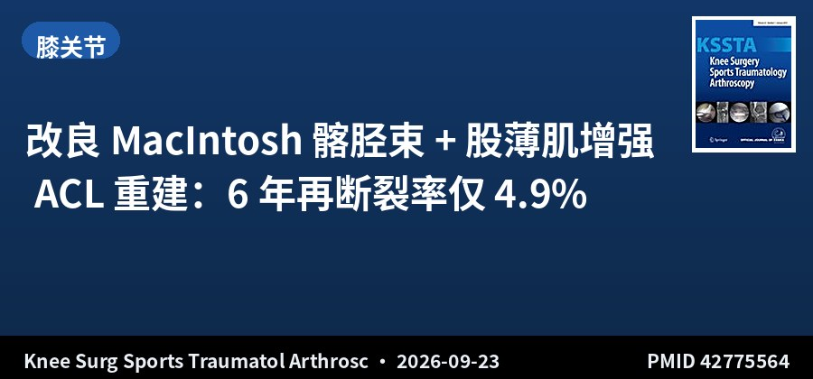
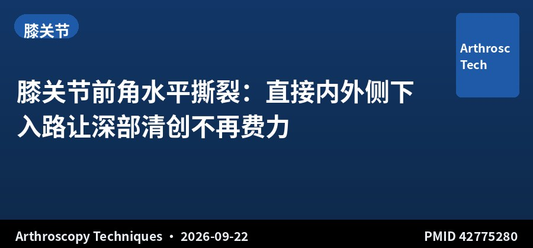
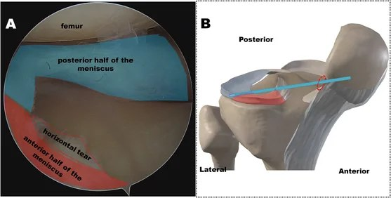
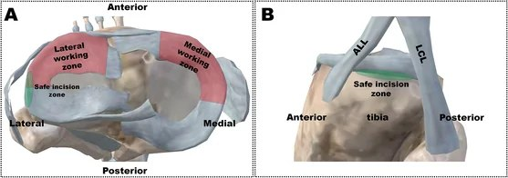
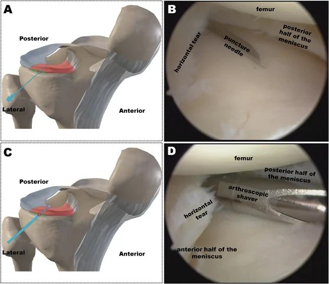
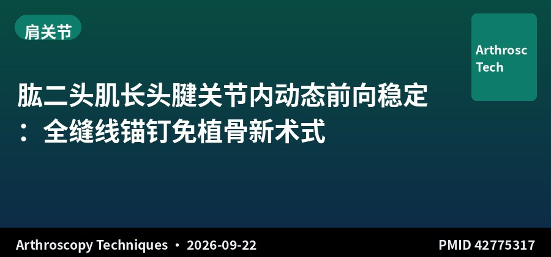
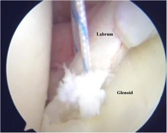
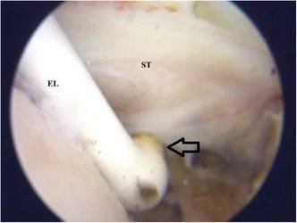
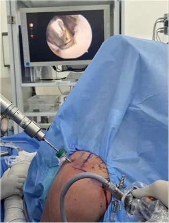
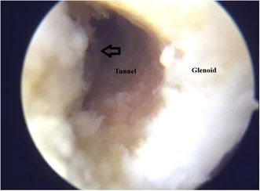

运动医学 · 关节镜 创伤骨科 →
① 点黄色按钮复制全文（当前语言版本）→ 公众号编辑器 Ctrl+V（文字样式完整；若题图提示"上传失败"，见②）；② 题图单独传：点卡片右上角「复制题图」→ 回到编辑器中该题图位置 Ctrl+V，编辑器会直接当图片上传（100% 成功）；③ 拆发单篇用「复制本篇」。题图文件也在工作区 imgs 文件夹，可在编辑器手动上传。
SPORTS MEDICINE & ARTHROSCOPY DIGEST
运动医学 · 关节镜文献速览
第 015 期 · 2026-09-24
9月23日 10 本核心期刊新收录 5 篇（剔除读者来信往返后精选 3 篇）
按部位分类：膝 2 · 肩 1 ｜ 含 1 篇长期随访队列 · 2 篇关节镜技术说明
编者按 EDITOR’S NOTE
本期是明显的「淡日」：9 月 23 日 10 本核心期刊仅新收录 5 篇，且其中 2 篇为读者来信与作者的往返回应（围绕运动冲击负荷、骨密度与 REDs 评估），剔除后实质文献仅 3 篇，全部纳入。
虽然量少，但各有落点。最重的一篇是 改良 MacIntosh 髂胫束 + 股薄肌增强 ACL 重建的 6 年随访（265 例）：4.9% 再断裂率、IKDC 92/Lysholm 95、91.6% 重返运动——这种「关节内 + 关节外」联合、不牺牲腘绳肌腱、不用异体的选项，恰好与上一期「25 岁以下单纯 BPTB 失败率更高」的结论形成呼应，可作为年轻高需求患者方案讨论的补充。
另外两篇是 Arthroscopy Techniques 的技术说明：一篇讲 肱二头肌长头腱关节内动态前向稳定（免植骨处理临界关节盂骨缺损），一篇讲 膝关节前角水平撕裂的直接下入路清创——都是日常关节镜里「顺手能做、常被跳过」的实用技巧，适合边看边收进工具箱。注：这两篇的期刊出版日期为 9 月 22 日，因 PubMed 收录延迟于今日才检出。
▍膝关节 · 2 篇

回顾性队列 · IV级证据 · 265例 · 随访≥6年
改良 MacIntosh 髂胫束 + 股薄肌增强 ACL 重建：6 年再断裂率仅 4.9%
Low Graft Re-Rupture Rate After Primary ACL Reconstruction Using a Modified MacIntosh Iliotibial Band Technique With Gracilis Augmentation: Minimum 6-Year Follow-up
Knee Surg Sports Traumatol Arthrosc · 2026-09-23 · 法国 FAST 队列 · PMID 42775564
一句话结论：265 例初次 ACL 重建（改良 MacIntosh 髂胫束技术 + 股薄肌增强，2015-2019），平均随访 84.3±10.7 个月。移植物再断裂 13 例（4.9%）；非失败并发症 5 例（1.9%）；额外手术（不含翻修）13 例（4.9%），以继发半月板病变切除最常见（4.2%）。252 例功能分析显著改善（P<.001），中位 IKDC 92.0、Lysholm 95.0。249 例术前运动者中 228 例（91.6%）重返运动，154 例（61.8%）重返同一运动、69 例（44.8%）恢复伤前水平，中位重返时间 8.0 个月。更年轻与内侧半月板撕裂为再断裂的独立危险因素。
要点：来自 FAST 队列（法国前瞻性 ACL 重建队列研究）的单中心回顾性分析，纳入 2015-01 至 2019-10 行该术式的初次重建者。主要结局为移植物再断裂；末次随访评估 PROMs、重返运动与并发症；多因素 logistic 回归识别再断裂及恢复伤前水平的相关因素。
对临床的启示：「关节内 + 关节外」联合重建近年重新升温，这项 6 年数据给出了支持：4.9% 再断裂、IKDC 92/Lysholm 95、91.6% 重返运动，整体表现扎实。最值得注意的是一种不牺牲腘绳肌腱（保留其屈膝/内旋动力）、也不使用异体的 ACL 重建选项——与上一期「单纯 BPTB 失败率更高」的结论相呼应，这种髂胫束联合重建可作为年轻高需求患者的讨论方案之一。局限是 IV 级证据、单中心、无对照组。

技术说明 · 关节镜技术
膝关节前角水平撕裂：直接内外侧下入路让深部清创不再费力
The Direct Medial and Lateral Inferior Horizontal Portals of the Knee: A Modified Arthroscopic Approach for Anterior Horn Horizontal Tears
Arthroscopy Techniques · 2026-09-22 · 技术说明 · PMID 42775280
一句话结论：半月板无血管区轻度水平撕裂是复杂半月板或盘状半月板手术中的常见发现，但处理半月板体部前 1/2 至 1/3 的下表面撕裂，因关节镜视野与器械受限而困难耗时。本文描述半月板体部前 1/3 下方的直接内侧与外侧下入路，可用刨刀或髓核钳高效清理深部水平撕裂，改善观察、提高效率、降低操作难度。
要点：技术说明，描述入路定位（半月板前 1/3 下方）与清创操作要点，适用于复杂半月板与盘状半月板手术中的深部水平撕裂。
对临床的启示：「前角水平撕裂清创」是不少关节镜医生因操作别扭而顺手跳过的一步，但残留的不稳定撕裂边缘可能持续引起机械症状。这篇给出的直接下入路是个务实技巧——用现有器械即可完成，无需特殊设备，适合在日常复杂半月板手术中掌握。作为技术说明，无结局数据。
📷 原文图片（共 3 张 · 左右滑动查看）



图片来源：原文开放全文（PubMed Central），版权归原出版方
▍肩关节 · 1 篇

技术说明 · 关节镜技术
肱二头肌长头腱关节内动态前向稳定：全缝线锚钉免植骨新术式
Inlay Dynamic Anterior Stabilization of the Shoulder With Long Head Biceps Tendon Using All-Suture Anchor
Arthroscopy Techniques · 2026-09-22 · 技术说明 · PMID 42775317
一句话结论：肱二头肌长头腱（LHBT）动态前向稳定已作为前向肩关节不稳（亚临界关节盂骨缺损）的软组织替代方案兴起。本文描述一种关节内（inlay）动态前向稳定技术：改良 Bankart 修复 + 经肩胛下肌 LHBT 转位，以全缝线锚钉固定于 5 mm 前下关节盂骨道、Krakow 缝合，重建「吊索 + 吊床」稳定效应，同时保留外旋、避免植骨。盂唇组织不足以单独 Bankart 修复时可术中灵活切换，且不阻碍未来骨块手术。
要点：技术说明，详述手术入路、锚钉置入、腱转位与固定步骤，以及适应证（关节盂骨缺损 <20%）与操作要点。
对临床的启示：LHBT 动态前向稳定（软组织版的「免植骨」方案）为临界骨缺损、拒绝植骨的年轻患者提供了低成本、可翻修的选择。本文的「关节内 inlay + 全缝线锚钉」重点优化腱-骨愈合与长度-张力关系，属术式细节迭代。适用人群应严格限定于关节盂骨缺损 <20% 且盂唇质量尚可者。作为技术说明缺乏临床结局数据，临床应用前需审慎。
📷 原文图片（共 4 张 · 左右滑动查看）




图片来源：原文开放全文（PubMed Central），版权归原出版方
关于本栏目：每日定时检索 AJSM、Arthroscopy、Arthroscopy Techniques、KSSTA、Sports Health、OJSM、J ISAKOS、Sports Medicine、Foot & Ankle International、JSES 共 10 本运动医学核心期刊前一日新收录文献，按关节分类，AI 辅助生成中英文精要。
声明：本内容由 AI 辅助整理，仅供学术交流参考，观点与数据请以原文为准，不构成诊疗建议。文献题录与摘要来源：PubMed。
— Sports Medicine & Arthroscopy Digest · Issue 015 —